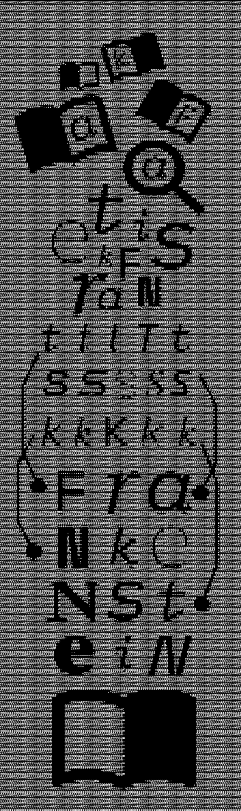
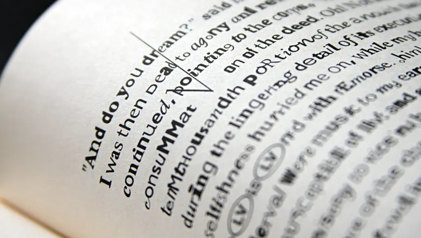

FRANKENFONT
Por Fathom Information Design
Frankenfont es una reconstrucción tipográfica del clásico Frankenstein de Mary Shelley, pero con un twist: cada carácter del texto está hecho usando glifos extraídos de fuentes incompletas (“subsetted fonts”) encontradas dentro de archivos PDF disponibles en internet.
 20.01.42.png)
Text Art
Puede tomar muchas formas: desde los clásicos ASCII art, donde se usan caracteres del conjunto ASCII para construir imágenes, hasta instalaciones tipográficas, neones, posters, proyecciones lumínicas, collage de palabras, y obras digitales que juegan con tipografía, escala, color y animación.
Se entiende como arte cuya idea comunicativa central depende del uso del texto como componente principal. No basta que haya palabras: el texto debe actuar como imagen, forma o elemento visual (no sólo decorativo).
....................................................................................................
...............................................:~!7?!77~............................................
..............................................^5P55Y?J5PG?..........................................
..............................................~Y?7!~~!7?B&J.........................................
..............................................:??7??7??JP#P.........................................
...............................................JGG?5GPY?YG5^........................................
...............................................^YYJJJ?J7?55~........................................
................................................!5YJ?????Y~.........................................
................................................:YJJ?JY555YJ:.......................................
................................................^5GGGB#BGGGBPJ??7!~^:...............................
...........................................:~7J5G&&&&&#BPPGGGGGGGGGGPJ~.............................
.......................................:~7YPGGGGG#&&&BPPPPPPPPPPPPPGGGGY:...........................
......................................^5GGGPPPGPPB##BPPPPPPPPPPPPPGGGGGG5:..........................
......................................YGPPPPPPPGPP##GPPPPPPPPPPPPPGGGGGGB?..........................
.....................................^PPPPPPPPPPGPB#GPPGGGGGGGGGPPGGGGPGBP:.........................
.....................................JGPPPPPPPPPPGBBGGGGGGGGGGGPGGGGPPGGGG~.........................
....................................:PGPPPPPPPPPPPGGGGGGGGGGPPPGBBGPPPGGGG~.........................
....................................?GGGPPPPPPPPPP5GGGGGPPPPGGGBBBGPPGGGGG~.........................
...................................^PPGGPPPPPPPPPP5PBGGGGPGGGGBBBPPGGGGGGG^.........................
...................................YGGGBBPPPPPPPPPPPBBBBGGGGGBBGPPGGGGGGG7..........................
.................................~5GGGGGBBPPPPPPPPPPGGGGGGGPPPPPPGGGGGG5!...........................
...............................^YGBBGGGB##GGPPPPPPBGBBGGGPJ77?YJPGGGGG?:............................
.............................^7YPGBB##BGY!:PBGGGGGBGGGBBY7!!!!J?GGGGY^..............................
............................^??7?5B#B5!:...^GBGGGGGGGGGJ7!?7?7?B&BGG!...............................
..........................:!??77!?J!:......^GGGGGGGGGP?J7JGJ?5?PGGBB5:..............................
........................^!?JJJ7?JJ!........YGGGGGBBBG??5?GBPY5JPGBBGG!..............................
.......................~YJ???7~J!J~.......~GGGGGGGBBGGPGGBBBGYPGBBBGGP:.............................
........................?P?^?^.J~7:.......JGGGGGGGGBGGGGGGBBG55GGGGGGBJ.............................
........................:!^^!.:?^........~GPPGGGGGGBGGGGGGGBBY5GGGGGGGB~............................
..............................:?^.......:YPPPGGGGGBBGGBGBBGGGYPGGGGGGGG?............................
..............................^J:........JGGGGGBB#&#BBBBBBBBBYPBBBBB#Y..............................
..............................~J:.......:GBB###&&&&&&&&&&&&&#YB&&####5..............................
..............................~?........5#BBBBB##&&#&&Y!B&&&BYG#####BG:.............................
..............................!7.......?#BBBBBBBBB##&J. 7&&&#YB####BBB~.............................
..............................~!......!BBBBBBBB###&&Y...:B&#G5G#####BB!.............................
..............................!!.....^GBBBBBB####&&5.....?&#BPB#####BB!.............................
..............................::....:P#BBBBBB##&#&P:.....:B&########B#!.............................
....................................J#BBBBB######G^.......?&&#########7.............................
...................................~BBBBB#######B^........:G&&########?.............................
...................................5#BBBBB######!..........7&&&#######J.............................
..................................:G#BBBBB#####7...........:G&&#######Y.............................
..................................~##BBBBBBB##�.............?&&#######B^............................
..................................7#BBBBB#####~.............:B&########J............................
..................................J#BBBBB###&P...............7&&#######B^...........................
..................................5#BBBBBB##&?................J&&#######5...........................
.................................:G#BBBBBB##B^.................P&########7..........................
.................................:B#BBBBB##&J..................~#&#######G^.........................
.................................^B#B###BB#G:...................Y&######B#Y.........................
.................................~#########!....................^B&######B#~........................
.................................!#B######G......................?&########Y........................
.................................5#B######5......................:P&#######G:.......................
................................:B########?.......................!#&&&####B^.......................
................................:G########~........................~B&&&###P:.......................
..............................^?5#&######P:.......................^Y###BBBGG:.......................
............................:YBB##BBBBBB#7........................J&#BBGGBGB!.......................
............................J###BBBB#BB#B!........................J&&####BG7:.......................
............................P&&&#####GJ!^.........................~YJJ??7!^.........................
...........................:!7?????7~:..............................................................
....................................................................................................

Se toman las 5.483 palabras únicas del texto de Frankenstein.
Para cada palabra, se busca en internet (usando la API de Yahoo, filtrando por archivos PDF).
Se descargan los primeros 10-15 PDF resultantes para cada palabra. Esto produjo un total de unos 64.076 archivos PDF.
Dentro de esos PDFs se encuentran unas 347.565 fuentes subset (es decir, las versiones de las fuentes que sólo contienen los glifos necesarios para ese PDF, no la fuente completa).
De esas fuentes subset se extrajeron 55.382 glifos únicos para llenar los 342.889 caracteres individuales que tiene el texto reconstruido.


El esquema de selección de qué glifo usar para cada instancia de un carácter depende de la frecuencia con que ese carácter aparece en los PDFs. Por ejemplo: si la letra “e” minúscula en Arial constituye un 3 % de todas las instancias de la “e” en los PDF, entonces aproximadamente el 3 % de las “e” en el texto reconstruido serán de la forma de “e” de Arial.
Tipográficamente, al inicio del libro se usan los glifos de las fuentes más comunes — Arial, Helvetica, Times New Roman — que son legibles y usuales. A medida que progresa el texto, se van introduciendo variantes más inusuales, estilos más ornamentados, cursivas, tipos menos comunes, hasta acabar hacia el final del libro con glifos de fuentes pictóricas, no-romanas, formas visualmente más extrañas. Esto produce una progresión visual que acompaña el desarrollo narrativo: empieza “ordenado/común” y termina “más caótico/grotesco”.
Nuevos medios de Lev Manovic
Modularidad: Cada carácter del texto está compuesto a partir de glifos individuales extraídos de diversas fuentes tipográficas. El libro se construye como una estructura modular, donde cada letra es una unidad independiente que, al combinarse, genera un cuerpo textual coherente.
Automatización: La recopilación y ensamblaje de glifos se realiza mediante algoritmos que descargan, filtran y procesan más de 60.000 archivos PDF. Este procedimiento automatizado sustituye la intervención manual y permite una producción sistemática y precisa.
Variabilidad: El proyecto introduce variaciones tipográficas constantes, una misma letra puede adoptar distintas formas según las fuentes encontradas produciendo un efecto de transformación progresiva a lo largo de la lectura, reflejando la naturaleza cambiante del propio relato de Frankenstein.
Bibliografia
https://fathom.info/frankenfont/ - https://www.apod.li/frankenstein - https://manovich.net/index.php/projects/new-media-a-user-s-guide
Grupo 14: Isadora Araya - Elisa Carey - Zophia Derpich - Gaspar Flores - Olivia Salinas